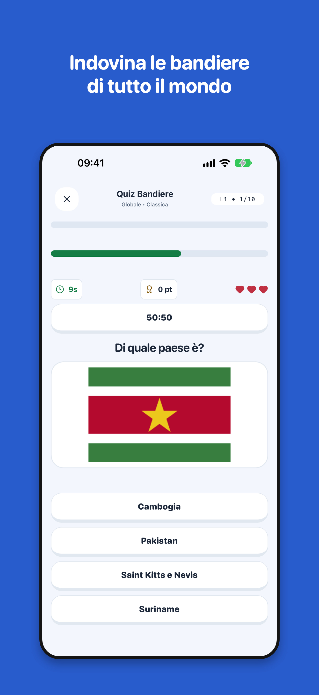
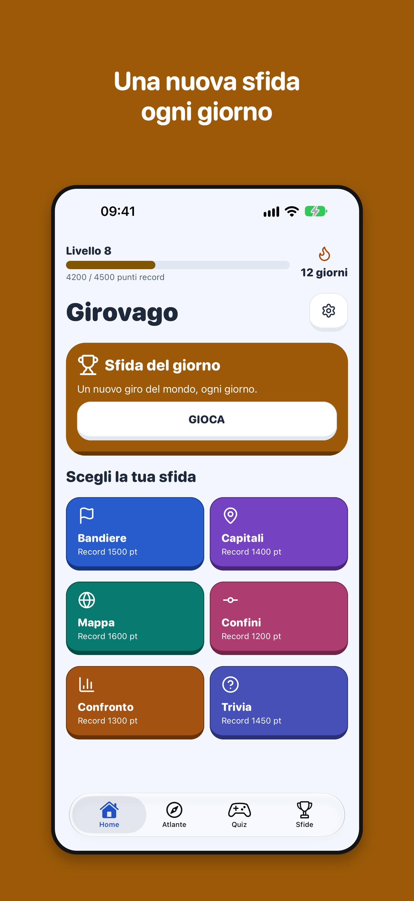
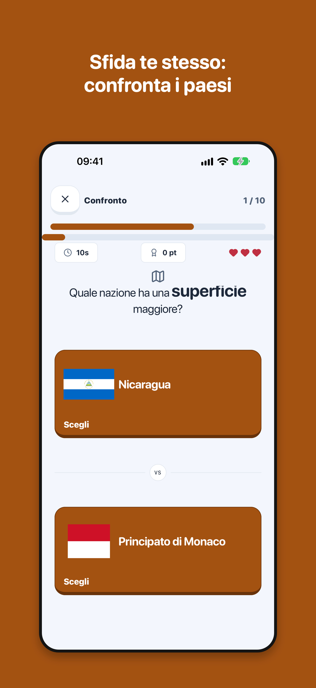
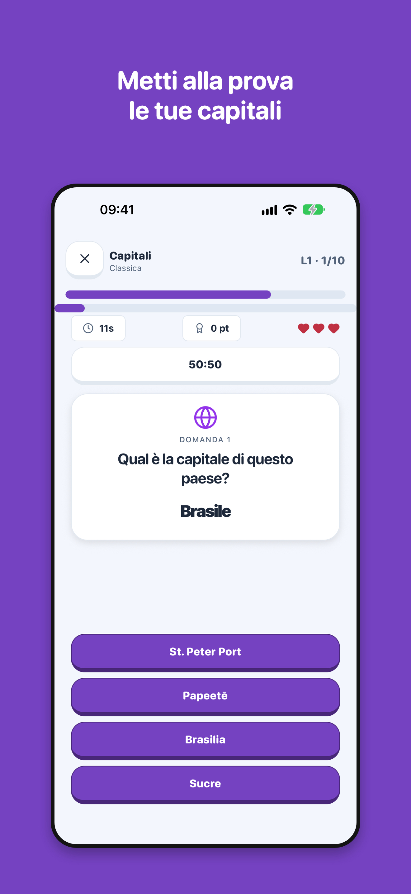

Bandiere e capitali
Abbina una bandiera al suo paese o scegli la capitale giusta tra quattro risposte.
Quiz di geografia per iPhone
Riconosci bandiere, indovina capitali e scopri quanto conosci il mondo. Ogni giorno ti aspetta una nuova sfida.
Guarda le schermate
Abbina una bandiera al suo paese o scegli la capitale giusta tra quattro risposte.
Trova un paese sulla mappa e riconosci quali nazioni confinano tra loro.
Confronta popolazione e superficie e mettiti alla prova con domande di cultura geografica.
Gioca ogni giorno, allunga la tua serie e prova a battere i tuoi record.
Tra una partita e l’altra, apri l’Atlante per esplorare paesi, lingue e valute. Puoi anche seguire i tuoi progressi e sbloccare trofei.



Per una domanda o per segnalare un problema, apri una segnalazione su GitHub. Indica il modello di iPhone, la versione di iOS e cosa stavi facendo nell’app.
Le segnalazioni sono pubbliche. Evita di includere dati personali.
Apri una segnalazione